Galéria
Galéria
Pillantás a BagolykaLand mindennapjaiba
Képek
Foglalkozásaink hangulatából
Néhány kép arról, hogyan telnek a napok a BagolykaLandban – játék, tanulás, mozgás és sok-sok mosoly.
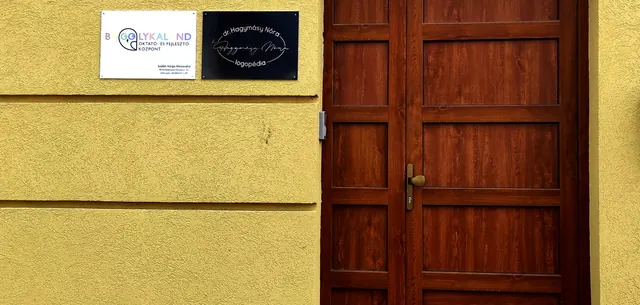
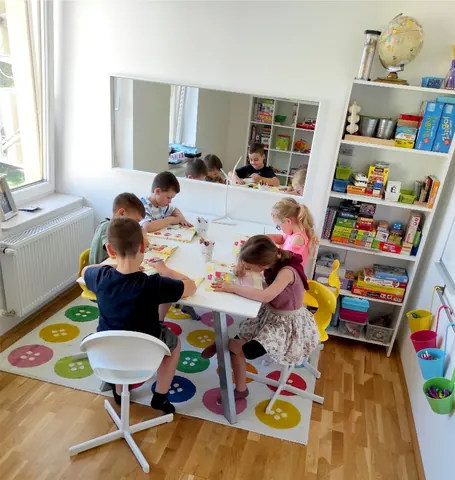
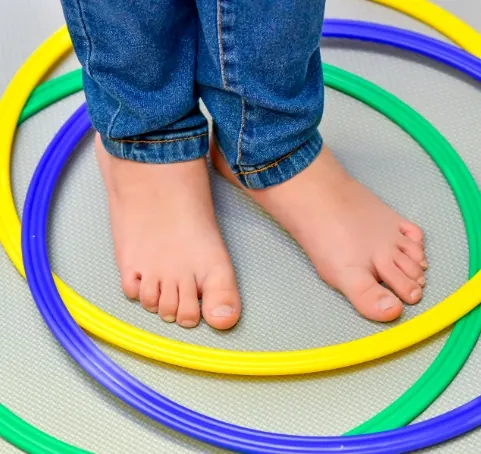
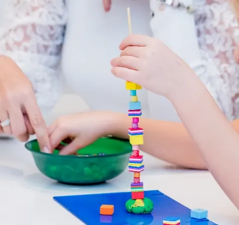
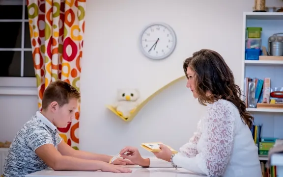
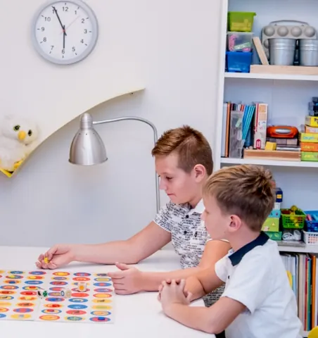
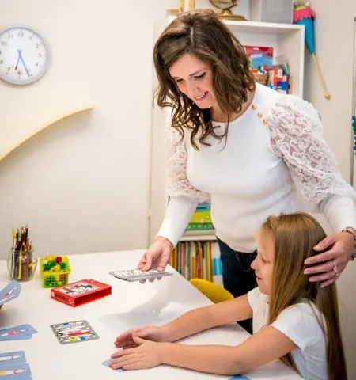
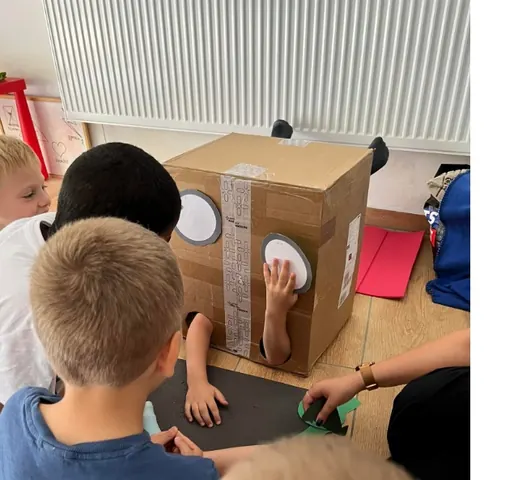

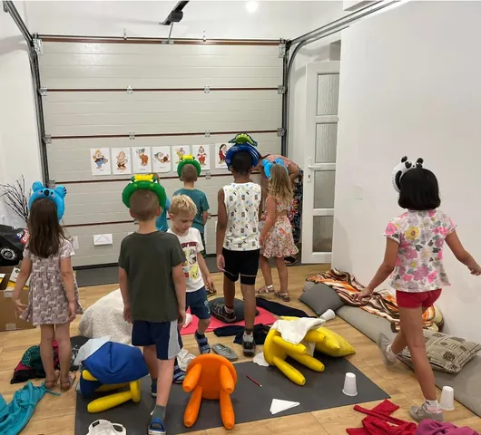
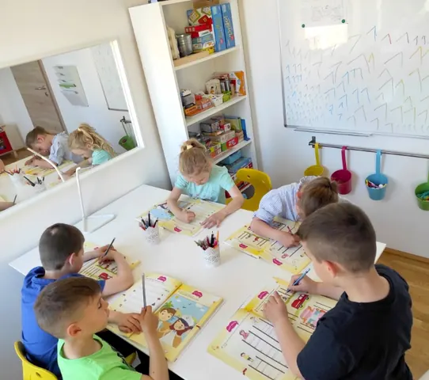
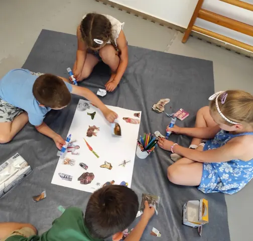
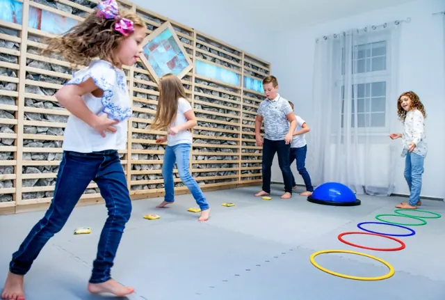
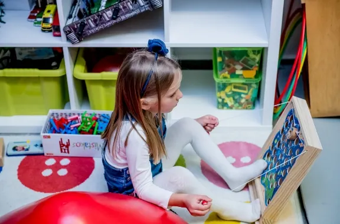
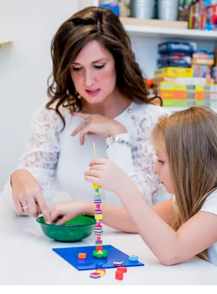
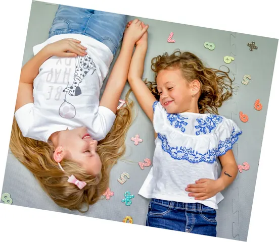
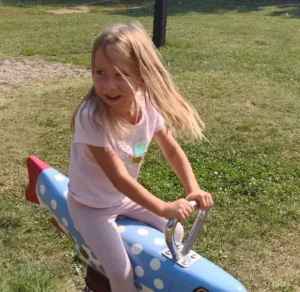
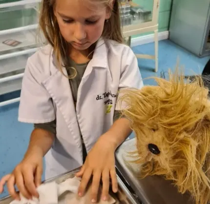
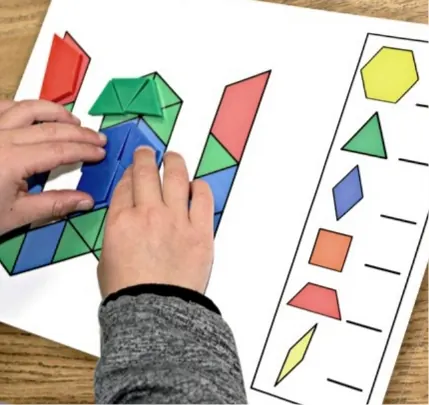


További képekért látogass el Facebook oldalunkra!
Szeretnél időpontot foglalni?
Vedd fel velünk a kapcsolatot, és megbeszéljük, hogyan tudunk segíteni gyermekednek!
Kapcsolatfelvétel